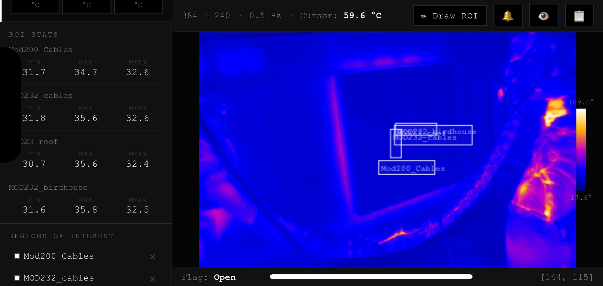
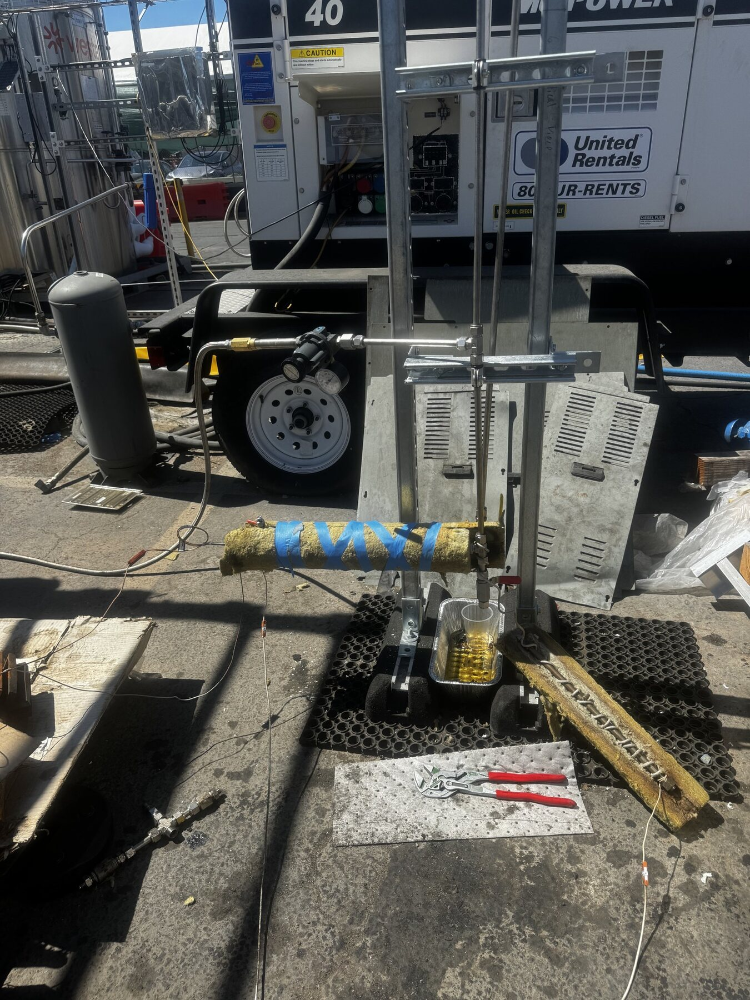

Antora Energy
I built the plant's first continuous thermal dataset.



Antora makes thermal batteries. They store cheap renewable electricity as heat and give it back to factories as heat and power, so those factories can stop burning fossil fuels. I spent the summer on the R&D test team, funded by a Stanford TomKat Center fellowship.
My days were spread across the plant. I wired and routed thermocouples on battery modules, tagged new equipment from the P&ID, ran SCADA safety checks, sat in on alarm reviews with the controls team, and helped with secondary cooling hardware. On top of that, I owned two projects from start to finish.
Project 1
Thermal camera monitoring
- The problem
- Nobody could see what a live battery module was doing thermally unless they were standing next to it.
- What I built
- An autonomous rooftop system: two infrared cameras and a Raspberry Pi in weatherproof enclosures I designed and 3D printed. I wrote the Python software that measures temperatures in the regions we care about, shows them in a web app, logs everything to the plant's dashboards and pings Slack when something runs hot. It runs 24/7 and restarts itself after reboots.
- The result
- The plant's first continuous thermal dataset, over a full charge cycle.
- Raspberry Pi
- Python
- Infrared thermography
- 3D printing
- Grafana
Project 2
Coking rig

- The problem
- When the plant's heat transfer fluid overheats it breaks down and leaves deposits in the tubing. The team needed real samples to study it.
- What I built
- A nitrogen purged, heat traced rig that reproduces that breakdown at different temperatures and hold times. I instrumented it with thermocouples logged through a DAQ, and kept iterating until it made consistent samples.
- The result
- Fouled tubing samples used in the plant's loss of cooling investigation.
- Rig design
- Thermocouples and DAQ
- Experiment design
"This summer I learned how much I love building the systems that tell engineers the truth about their hardware."